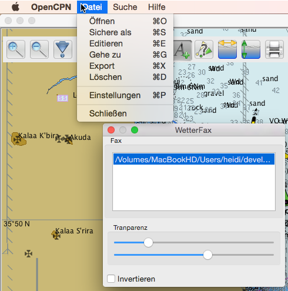
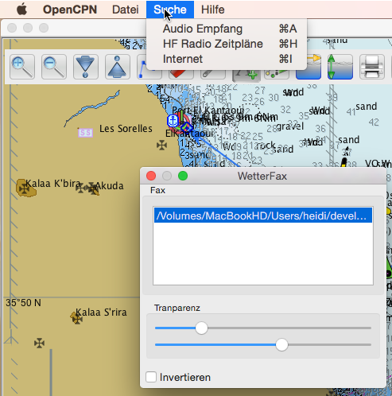
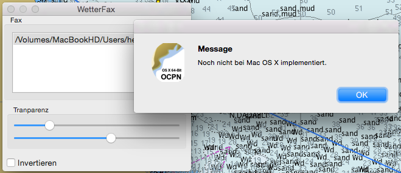
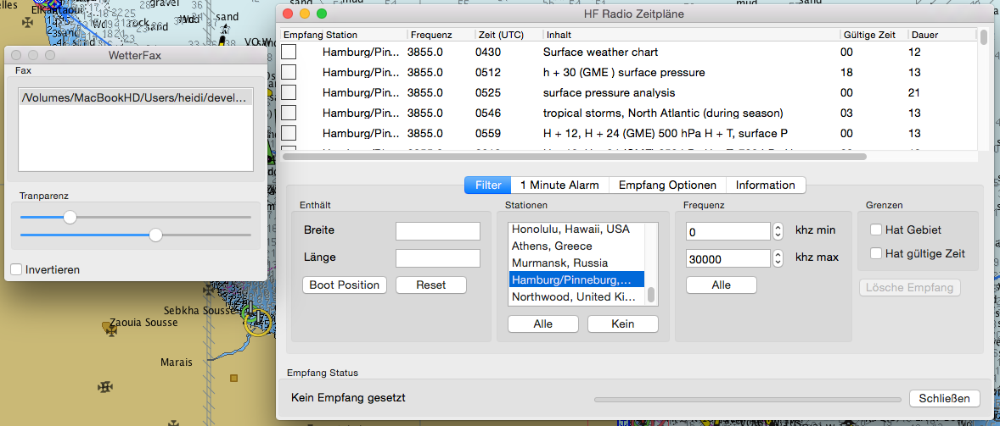
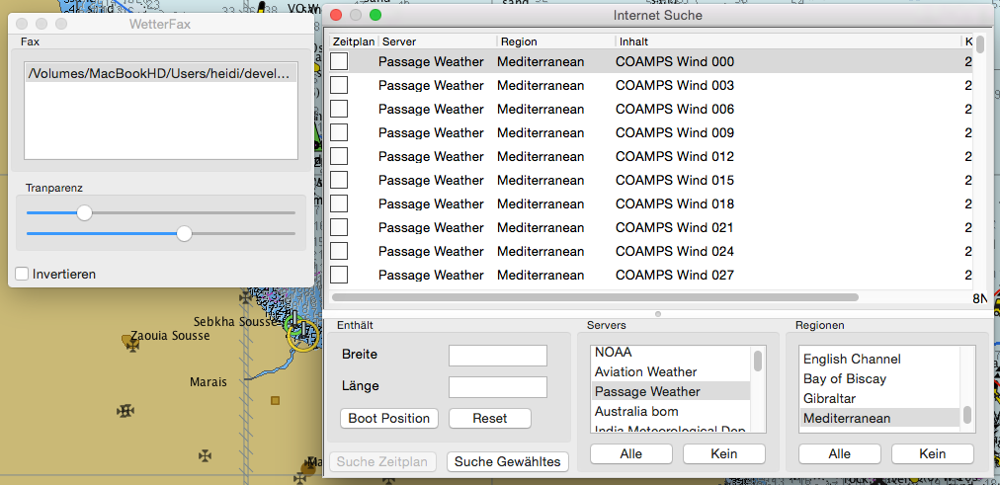

Wetterfax Plugin
Das Wetterfax Plugin kann der Karte Wetterfaxe überlagern, wie sie von vielen Wetterstationen verbreitet werden. Mit Mac OS X können jedoch noch keine Wetterfaxe direkt mit dem Plugin über den Audio-Eingangsstecker des Mac empfangen werden. Mit Öffnen kann man jedoch eine zuvor abgespeicherte Wetterfax-Datei einbinden und anzeigen sowie auch als kap Datei exportieren. Gegebenenfalls sind Anpassungen des Datenformats erforderlich.
 
Mit Aufruf/Aktivierung des Wetterfax Plugins ändert sich das Standard-Menü auf die Menüpunkte des Wetterfax Plugins. Das Datei-Menü enthält die Punkte zur Bearbeitung einer Fax-Datei, das Suche-Menü Listen über Radio-Stationen und Internet-Quellen.

Audio-Empfang ist noch nicht möglich.

Auswahl Dialog für Radio Stationen.

Auswahl Dialog für Internet Quellen und Download der Datei, wenn Internetverbindung verfügbar.
Bilder können als Raster-Seekarte (kap Datei) exportiert werden, wenn sie korrekt in den Bearbeitungs-Dialogen georeferenziert wurden.